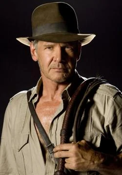u simplesmente Indiana Jones, é um personagem da série de filmes Indiana Jones, criado por George Lucas e Steven Spielberg, George lucas criou o personagem em homenagem aos heróis de séries e filmes de ação dos anos 1930.
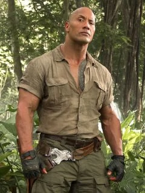O nerd Spencer assume a identidade do Dr. Smolder Bravestone Fridge, astro do time de futebol americano é relegado ao papel do ajudante e biólogo de Bravestone, Moose Finbar,A garota inteligente com poucas habilidades sociais Martha, vira o cliché feminino em games Ruby Roundhouse
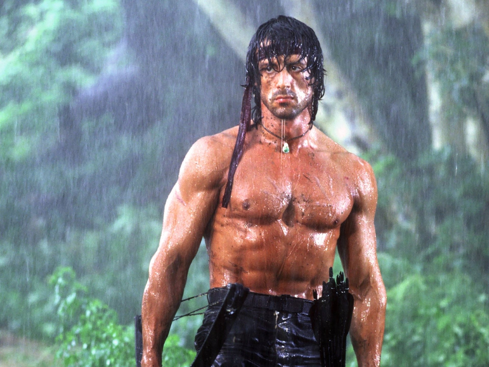 Rambo é um personagem fictício icônico, central à saga Rambo. Surgiu pela primeira vez no romance "First Blood", de 1982, escrito por David Morrell, porém posteriormente tornou-se mais famoso por sua aparição na série de filmes, em que foi interpretado por Sylvester Stallone.
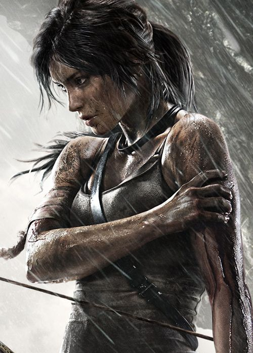Quando tinha 9 anos de idade, Lara Croft sobreviveu a um acidente de avião na Cordilheira do Himalaia, onde a mãe dela foi dada como desaparecida. Depois de resistir a uma caminhada de dez dias até Katmandu, Lara passou o resto de sua infância sendo criada pelo seu pai, o arqueólogo Richard Croft
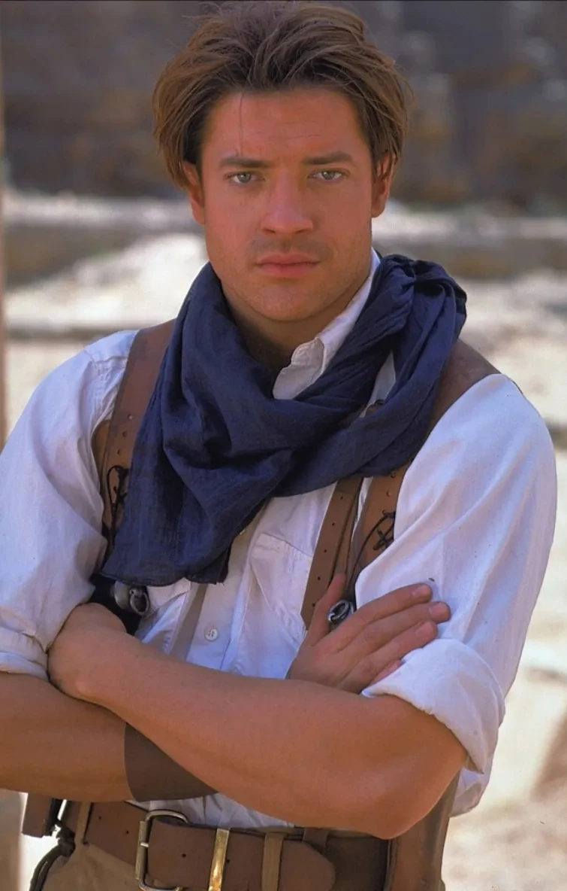
Richard "Rick" O’Connell é um personagem fictício e o principal protagonista da segunda encarnação da franquia The Mummy. Ele é retratado por Brendan Fraser. Fraser reprisou o papel de Rick em The Mummy Returns lançado em 2001 e em The Mummy: Tomb of the Dragon Emperor de 2008.
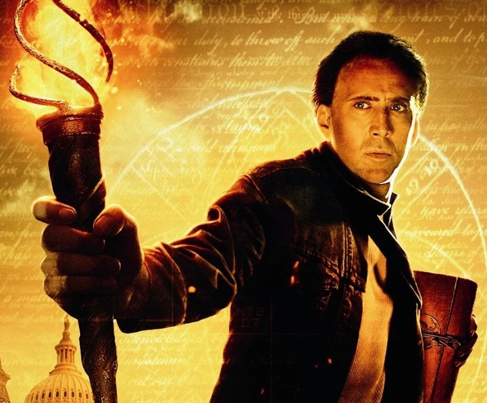
Benjamin Franklin Gates, é um personagem fictício da Disney Universe interpretado por Nicolas Cage e pertencente ao cinematográfica saga chamado Benjamin Gates, dirigido por Jon Turteltaub . Fanático pela História, ele apareceu pela primeira vez no filme Benjamin Gates e o Tesouro dos Templários
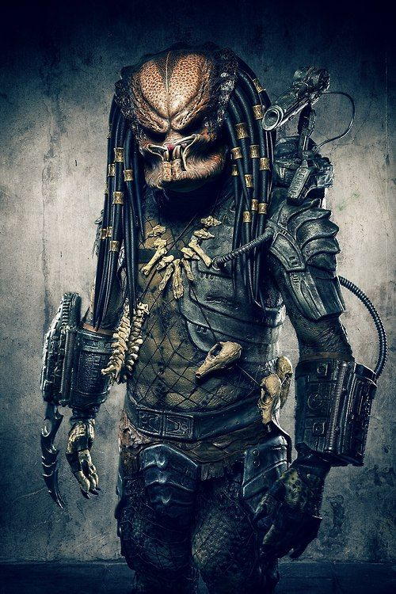
Durante a operação, eles são seguidos e atacados por um inimigo invisível e sanguinário, na verdade, um ser alienígena que vive camuflado na selva e caça humanos por esporte. O objetivo do grupo passa a ser a própria sobrevivência, lutando contra o pior oponente que já enfrentaram.
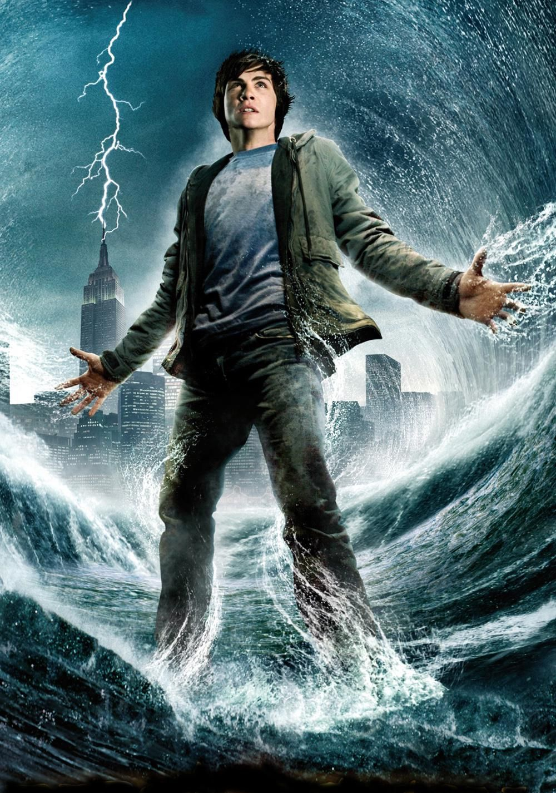
Percy Jackson, não existe na mitologia grega, sendo um personagem original criado por Riordan no livro O Ladrão de Raios. O herói moderno é filho de Sally Jackson com o deus Poseidon, possuindo uma gama de poderes – e responsabilidades – imensa. No entanto, seu nome é inspirado em um grande herói
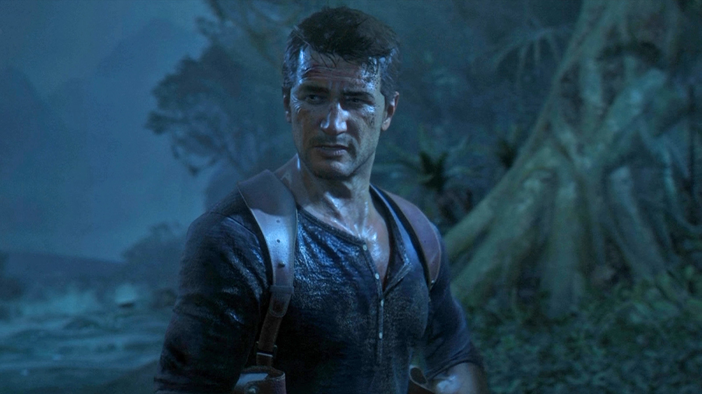
Ele é um caçador de tesouros profissional, descrito como um especialista em ação e de recuperações em alto mar. Desde a infância, Nate e seu irmão mais velho, Samuel Drake, afirmavam falsamente serem descendentes do famoso explorador inglês Francis Drake
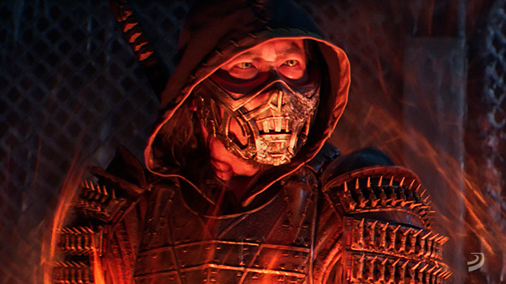
Nascido no clã Shirai Ryu Ninja, Hanzo Hasashi estava entre os melhores shinobi do clã. Ele ganhou o nome "Sasori" (a palavra japonesa para "Scorpion") por causa de suas incríveis habilidades ninja, e sua vida foi abençoada com kombat pela glória do grão-mestre de seu clã
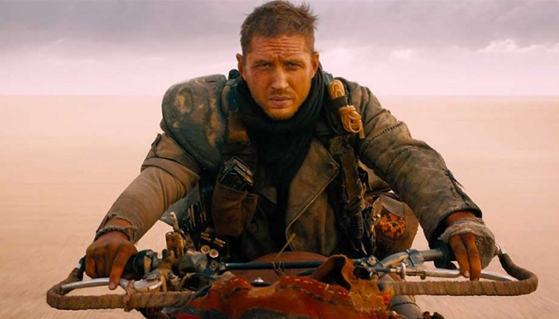
Max Rockatansky, é o personagem principal da franquia Mad Max. Max foi criado pelos cineastas George Miller e Byron Kennedy e foi interpretado pelo ator Mel Gibson nos três primeiros filmes, Mad Max, Mad Max 2: The Road Warrior e Mad Max Beyond Thunderdome, e por Tom Hardy no quarto
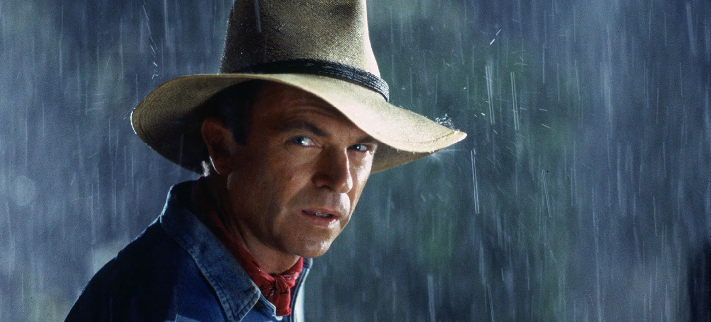
Alan Grant é um personagem fictício criado por Michael Crichton. É protagonista do livro Jurassic Park, assim como no primeiro e no terceiro filme da saga Jurassic Park Tem uma forte afinidade com crianças, e é especialmente, um estudioso dos dinossauros. O personagem de Grant é baseado no paleontólogo Jack